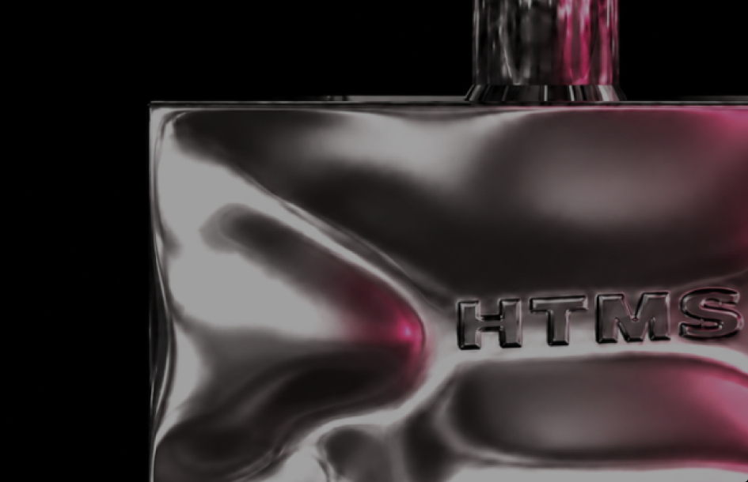

HTMS
THE SEARCH FOR IDENTITY
In a crowded, noisy world, finding and maintaining your distinct presence
is harder than ever. Trends blur into one another, leaving a void where
personal signature should be. We cut through the noise with clinical precision.
